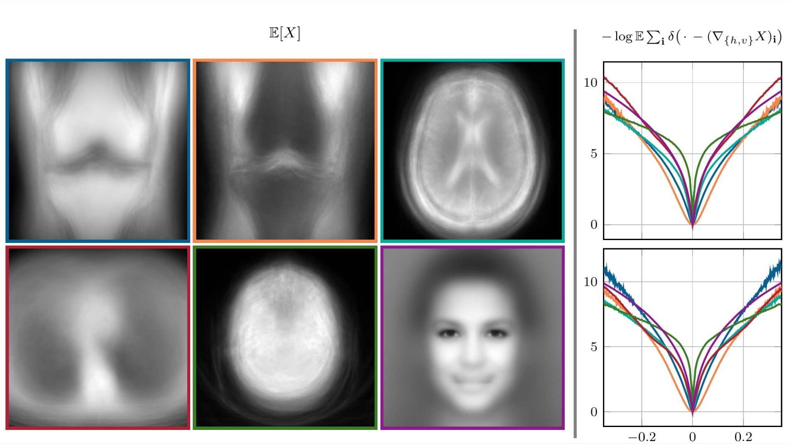
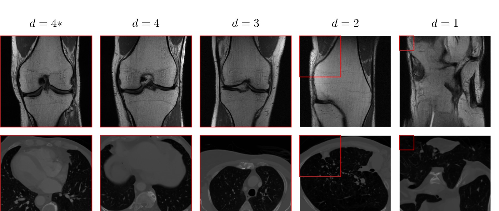
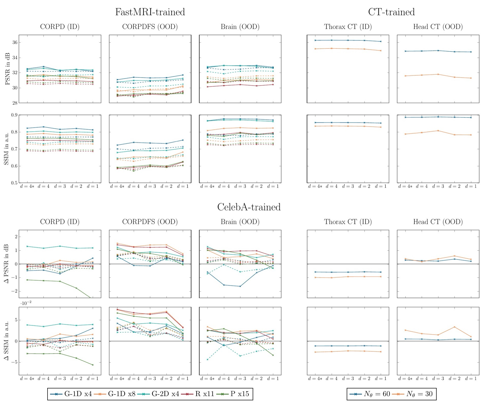
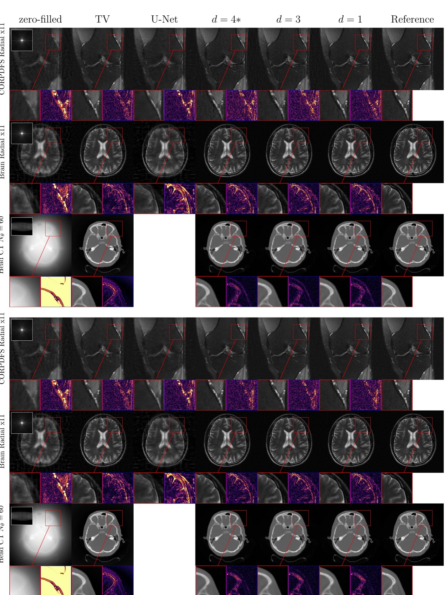
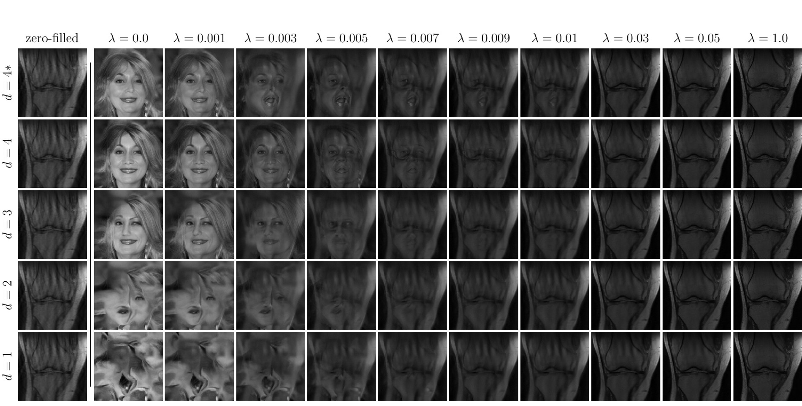

IJCV 2026 · MRI / CT RECONSTRUCTION · DIFFUSION PRIOR
更大的模型并不总是更好：迈向医学图像重建的通用先验
Bigger Isn't Always Better: Towards a General Prior for Medical Image Reconstruction
做 MRI 或 CT 重建的人通常直接下载一个为无条件采样设计的大网络（ncsnpp），原封不动地塞进后验采样算法里。这篇论文只改了一件事——按深度 把感受野切小——然后用两种后验采样算法把五档模型在 MRI、CT 和自然图像上全训了一遍。结论有两个：分布内场景下，最小的模型（本质上是一个 ResNet）几乎不输带注意力的 U-Net；分布外场景下它明显更稳，而只在自然图像上训练的模型甚至能超过在对应医学图像上训练的模型。
- 原文
- arXiv:2501.07376v1（2025-01-13，目前唯一的 arXiv 版本）
- 发表
- International Journal of Computer Vision（IJCV）2026
- 规模
- 正文 5 节 + 附录 2 节 · 13 公式 · 5 图 · 3 表 · 2 算法 · 55 文献
本页是 arXiv:2501.07376v1 的中英文全文对照翻译，公式、表格数字与图注均对照 arXiv LaTeX 源码核对。该论文已正式发表于 IJCV 2026，但 arXiv 只挂出 2025-01-13 的初版，因此本页正文以该版本为准；期刊版可能有措辞与排版差异，以出版方版本为准。原文用数字引用（[1]–[55]），本页保持原编号并链接到条目。图中的文字不重绘，网页图片由 arXiv PDF 按 300 dpi 栅格化后裁切，与 PDF 矢量原图不是逐位一致。所有额外讲解都标为「译者注」，与原文分开。
原文：arXiv 摘要 ↗ · 原文 PDF ↗ · 官方代码 ↗ · 返回论文条目 →
读之前，先把这几个词分清
这一段是译者注，不是原文。全文只围绕一个问题：重建到底是靠先验记住的全局形状，还是靠局部纹理？读公式 (2)–(7) 时，先分清下面四个量。
- 前向算子 ：测量写成 。MRI 里 ：二维离散傅里叶变换后只保留掩膜 选中的那些 k 空间频率。CT 里 ：Radon 变换后只保留 个角度。
- 后验采样：给定先验分布 和测量模型 ，从 抽样。本文用两种算法做条件采样：Chung & Ye 的 PC 采样与 Jalal 等人的 ALD 采样，两者都靠公式 (7) 的「数据一致性」把采样拉回测量 。
- 感受野 与深度 ：深度是网络处理的分辨率层数。 是原版
ncsnpp（含自注意力）， 只剩单层残差结构，感受野 49×49。注意理论感受野会被低估/高估，真正起作用的是「有效感受野」。 - 指标：PSNR（dB）与 SSIM（无量纲，越接近 1 越好）。图 3 下半部分画的是 ：CelebA 训练模型减去同架构的医学图像训练模型，大于 0 就是自然图像先验赢了。
术语速查（译者注）
- 前向算子
- 把图像映射成测量的线性算子，MRI 是「傅里叶 + 掩膜」，CT 是「Radon + 视角选择」。
- 数据一致性映射
- 公式 (7)：把当前估计往测量 上投影一步，步长 。本文发现 时这一项权重极大，先把先验的角色压小了。
- VE / VP
- 扩散过程的两族噪声日程：VE（方差爆炸，本文用它）与 VP（方差保持）。
- PC / ALD
- 两种无条件采样器：predictor–corrector（预测–校正）与退火朗之万动力学；本文把它们各自的条件版本拿来重建。
- ID / OOD
- 分布内 / 分布外。CORPD 是 fastMRI 训练集的分布内膝盖数据；脂肪抑制膝盖 CORPDFS 与脑部是 MRI 的分布外数据；胸部 CT 分布内，头部 CT 分布外。
- G-1D / G-2D / R / P
- 欠采样掩膜：一维高斯、二维高斯、径向（radial）、泊松盘（Poisson disk），数字是加速倍数。
- AF / Nθ
- 加速因子（acceleration factor，k 空间的欠采样倍数）与 CT 的投影角度数 。
摘要
English original
扩散模型已被成功地用于许多逆问题，包括 MRI 与 CT 重建。研究者通常把原本为无条件采样设计的模型直接拿来复用，而不做任何修改。借助两种不同的后验采样算法，我们用经验结果表明：这样的大网络并非必需。我们最小的模型实际上就是一个 ResNet，在分布内重建上几乎与带注意力的 U-Net 一样好，同时对分布偏移稳健得多。此外，我们引入在自然图像上训练的模型，并证明它们可以同时用于 MRI 和 CT 重建，在分布外的情形下超过在医学图像上训练的模型。作为这些发现的结果，我们强烈提醒不要简单地复用非常大的网络，并鼓励研究者让模型复杂度与具体任务相匹配。我们还主张，迈向通用扩散式先验的关键一步是在自然图像上训练。
English original
Diffusion model have been successfully applied to many inverse problems, including MRI and CT reconstruction. Researchers typically re-purpose models originally designed for unconditional sampling without modifications. Using two different posterior sampling algorithms, we show empirically that such large networks are not necessary. Our smallest model, effectively a ResNet, performs almost as good as an attention U-Net on in-distribution reconstruction, while being significantly more robust towards distribution shifts. Furthermore, we introduce models trained on natural images and demonstrate that they can be used in both MRI and CT reconstruction, out-performing model trained on medical images in out-of-distribution cases. As a result of our findings, we strongly caution against simply re-using very large networks and encourage researchers to adapt the model complexity to the respective task. Moreover, we argue that a key step towards a general diffusion-based prior is training on natural images.
1 引言
English original
生成式深度学习方法，尤其是扩散模型 [9]、[43]、[20]，在过去几年取得了显著进展。除了从零开始生成图像，它们也被成功应用于各种逆问题，例如图像修补 [46]、[11]、[26]、[33]、超分辨率 [16]、[27] 或医学图像重建 [53]、[51]、[45]、[13]。
English original
Generative deep learning approaches, in particular diffusion models [9, 43, 20], have made significant advances over the last several years. In addition to generating images from scratch, they have also been successfully applied to various inverse problems, such as image in-painting [46, 11, 26, 33], super-resolution [16, 27] or medical image reconstruction [53, 51, 45, 13].
以欠采样 MRI 重建为例，基于深度学习的方法多年前就已经取代了纯粹手工设计的先验，例如 小波压缩感知 [36] 或全变分（TV）[29]。起初，研究主要集中于判别式方法 [19]、[1]、[41]，它们能生成相当好的重建结果。然而这些模型的一个关键缺点是：它们通常无法跨对比度、解剖部位和欠采样掩膜泛化，必须针对这些因素的每一种组合分别训练。这是它们落地的重要障碍，因为高质量的大数据集只对极少数解剖部位存在。生成模型克服了这一限制，并对分布偏移展现出惊人的稳健性 [51]、[34]、[13]、[24]。它们还带来其他好处，例如能够估计重建背后的不确定性——这些优势使生成式方法从长期看更适合临床应用。
English original
In undersampled magnetic resonance imaging (MRI) reconstruction, for example, deep learning–based approaches have superseded purely hand-crafted priors such as -wavelet compressed sensing [36] or total variation (TV) [29] years ago. At first, research has mainly focused on discriminative approaches [19, 1, 41], which are able to generate remarkably good reconstructions. However, a key disadvantage of these models is that they typically fail to generalize across contrasts, anatomies and undersampling masks and have to be trained separately for each combination of these factors. This is an important obstactle to their adoption, because high-quality large data sets are only available for very few anatomies. Generative models overcome this limitation and exhibit an incredible robustness towards distributions shifts [51, 34, 13, 24]. They also offer other advantages, such as the ability to estimate the uncertainty behind a reconstruction—these benefits make generative approaches more viable for clinical adoption in the long run.
尽管结果令人期待，仍有一些未解的问题。这些模型的重建过程通常被描述为后验采样：给定无条件分布 和测量模型 ，目标是从 中采样。但很容易看出，这不可能是全部故事：在分布外（OOD）重建中，网络恢复的是它完全没有训练过的分布中的信号——这显然本应是不可能的事。而且，即使在分布内（ID）情形下，对大多数模型来说真正的后验采样不可能实现，对所有模型来说计算上都不可行，正如 Gupta 等人 [18] 最近所证明的。
English original
Despite the promising results, there are still some open questions. The reconstruction process of these models is typically described as posterior sampling, where the goal is, given the unconditional distribution and a measurement model , to generate samples from . However, one can easily see that this cannot be the entire story, because in out-of-distribution (OOD) reconstructions, the network recovers signals from a distribution it has not been trained on at all—this should clearly be impossible. Moreover, even in in-distribution (ID) settings, true posterior sampling is impossible for most models and computationally intractable for all others, as Gupta et al. [18] have recently shown.
如果它们并不是在做后验采样，那么这些算法究竟是如何重建欠采样医学图像的呢？在全局尺度上，不同身体部位与对比度的 MRI 和 CT 图像彼此之间、以及它们与自然图像之间差异很大。然而在局部，它们服从相似的分布。为了说明这一点，令 表示由六个数据集之一描述的随机变量：质子密度加权膝关节 MRI、质子密度加权脂肪抑制膝关节 MRI、脑部 MRI、胸部与头部 CT，以及名人面孔图像。在图 1 中，我们把均值 作为全局统计量，把图像梯度的负对数直方图 [22] 作为局部统计量，即
English original
If they do not perform posterior sampling, then how do these algorithms reconstruct undersampled medical images? On a global scale, MRI and computed tomography (CT) images of different body parts and contrasts differ greatly from each other and from natural images. Locally however, they follow a similar distribution. In order to demonstrate this, let denote a random variable described by one of six data sets: proton density weighted knee MRI, proton density weighted fat suppressed knee MRI, brain MRI, thoracic and head CT and images of the faces of celebrities. In Figure 1, we show the mean as a global statistic and the negative log-histogram of the image gradient [22], i.e.
作为局部统计量。这里 是遍历所有像素的双索引， 与 是水平与垂直方向的一阶有限差分算子，参见例如 [8]。这些数据集在全局上彼此不同，但局部统计量非常相似。
English original
as a local statistic. Here, is a two-index ranging over all pixels and and are horizontal and vertical first order finite difference operators, see e.g. [8]. While the data sets are distinct globally, the local statistics are very similar.
这让我们提出假设：至少分布外重建主要是由局部特征驱动的，而这些特征在不同对比度与结构之间具有相似性。如果确实如此，会带来几个重要含义：第一，那些通常被默认使用的大模型其实并非必需，这反过来可以显著减少训练时间与重建时间；第二，我们可以通过使用更小的模型来设计更稳健的 MRI 与 CT 重建算法；第三，只要局部图像统计量相似，作用于局部尺度的模型就可以在截然不同的数据集上训练，例如自然图像。
English original
This leads us to hypothesize that at least the out-of-distribution reconstructions are primarily driven by local features, which share similarities across contrasts and structures. If this were the case, it would have several important implications: First, that the large models which are typically used by default are not actually necessary; this in turn could significantly reduce both the training and reconstruction times. Second, that we can design more robust MRI and CT reconstruction algorithms by utilizing smaller models. And third, that models which work on a local scale could be trained on vastly different data sets, such as natural images, as long as local image statistics are similar.
在本工作中，我们着手检验这些设想；为此，我们修改了著名的基于分数的生成模型 [46]（它此前已被成功用于医学图像重建 [12]），使其具有不同大小的感受野。随后，我们在 MRI、CT 与自然图像上训练这些模型，并在不同的医学图像数据集上评估它们，既包括分布内也包括分布外。
English original
In this work, we set out to test these theories; to that end, we modify the well-known score-based generative model [46], which has previously been successfully applied to medical image reconstruction [12], such that it has differently-sized receptive fields. Then, we train these models on MRI, CT and natural images and subsequently evaluate them on different medical image datasets, both in- and out-of-distribution.
六个数据集的全局均值几乎无关，局部梯度统计几乎重合

English original
2 方法
English original
为简单起见，本文始终采用实值仿真研究。因此我们假设被成像的解剖结构是实值的，并通过回顾性欠采样来构造数据。形式上，对于尺寸为 的图像 ，数据由 给出，其中前向算子 取决于成像模态。对 MRI， 结合了二维离散傅里叶变换 与二值掩膜
English original
For the sake of simplicity, throughout this paper we stick to real-valued simulation studies. Thus, we assume that the imaged anatomy is real-valued and construct the data via retrospective undersampling. Formally, for an image of size , the data are given by where the forward operator depends on the imaging modality. In case of MRI combines the two-dimensional discrete Fourier transform and the binary mask
其中 是正则项。然而在部分实验中我们希望在正则强度与数据保真之间做权衡。于是我们放松约束，转而考虑求解
English original
where is a regularizer. However, for some experiments we want to trade off the strength of the regularizer and the data fidelity. Thus we relax the constraint and instead consider the problem of finding
其中 。
English original
where .
从贝叶斯角度看，公式 (3) 就是在先验 exp(−R(⋅)) 下的最大后验估计。扩散模型近来在建模——或者至少从 中采样——方面展现了可观的结果。下面几节我们简要回顾扩散模型，以及如何让它们充当形如公式 (3) 的逆问题中的正则项。
English original
From a Bayesian perspective, Eq. (3) is the maximum a-posteriori estimate given a prior exp(−R(⋅)). Diffusion models have recently shown remarkable results in modeling—or at least drawing samples from—. In the following sections, we briefly review diffusion models and how they can be used to act as a regularizer in inverse problems of the form Eq. (3).
2.1 扩散模型
English original
Song 等人 [46] 提出的基于分数的扩散模型考虑一族随机变量 Xt，由连续变量 t ∈ [0, T] 索引。这里 X0 是对应参考数据的随机变量，其密度 pX₀ 是我们想学习的，并且我们拥有它的一份独立同分布样本数据集。XT 服从一个我们能高效采样的分布——例如正态分布。这一转移由随机微分方程（SDE）建模：
English original
Score-based diffusion models introduced by Song et al. [46] consider a family of random variables Xt indexed by a continuous variable t ∈ [0, T]. Here, X0 is the random variable corresponding to the reference data whose density pX₀ we wish to learn and from which we have a dataset of independent and identically distributed samples. XT follows a distribution which we can efficiently sample from—for example a normal distribution. The transition is modeled with the stochastic differential equation (SDE)
其中 f : ℝn × [0, T] → ℝn 是漂移系数，g : [0, T] → ℝ 是扩散系数，w 表示标准维纳过程。我们按 [46] 中的方差爆炸（VE）变体选取 f 与 g。
English original
where f : ℝn × [0, T] → ℝn is the drift coefficient, g : [0, T] → ℝ is the diffusion coefficient, and w denotes the standard Wiener process. We choose f and g according to the variance exploding variant in [46].
公式 (4) 的逆过程可以由 SDE [2] 描述：
English original
The reverse process of Eq. (4) can be described by the SDE [2]
其中 w̃ 是逆向维纳过程。一般来说分数 ∇ log pXt 不可解，因此主要思路是用一个时间条件神经网络 sθ : ℝn × [0, T] → ℝn 去估计它，使得 sθ(·, t) ≈ ∇ log pXt；这可以用分数匹配 [23]、[44] 来训练：最优参数由下式求得
English original
where w̃ is a reverse Wiener process. In general, the score ∇ log pXt is not tractable, thus the main idea is to estimate it with a time-conditioned neural network sθ : ℝn × [0, T] → ℝn such that sθ(·, t) ≈ ∇ log pXt, which can be trained using score matching [23, 44]: The optimal parameters are found by
2.2 用于医学图像重建
English original
从基于分数的扩散模型生成无条件样本主要有两种方法：退火朗之万动力学（ALD）与 [46] 中提出的预测–校正（PC）算法。后者在预测步——数值求解逆 SDE 公式 (5)——与校正步——本身就是朗之万迭代——之间交替。我们把两种方法都做了扩展以支持条件采样：前者的修改由 Jalal 等人 [24] 提出，后者的修改由 Chung 和 Ye [13] 提出。二者都通过施加如下形式的数据一致性映射来工作：
English original
There are two main approaches to generating unconditional samples from score-based diffusion models: annealed Langevin dynamics (ALD) and the predictor–corrector (PC) algorithm introduced in [46]. The latter alternates between predictor steps—which numerically solve the reverse SDE Eq. (5)—and corrector steps—which are Langevin iterations themselves. We use both methods with extensions to allow for conditional sampling: the modification to the former was introduced by Jalal et al. [24], the one to the latter by Chung and Ye [13]. They both work by imposing a data-consistency mapping of the form
其中参数 λ ∈ [0, 1] 控制它的权重有多大；除非另行说明，λ = 1。注意 λ = 0 对应无条件采样。算法的详细描述及相应伪代码见附录 A；受资源限制，我们只在 MRI 数据上使用 ALD 采样。
English original
where the parameter λ ∈ [0, 1] controls how heavily it is weighted; λ = 1 unless it is stated otherwise. Note that λ = 0 corresponds to unconditional sampling. A detailed description of the algorithms alongside the corresponding pseudo-code can be found in Appendix A; due to resource limitations, we use ALD sampling only on MRI data.
2.3 网络结构
English original
原始的分数模型 [46] 是一个经过大量改造的 U-Net [40]，最低分辨率处带一个自注意力模块 [49]、[50]。现在引入网络 sθ 的深度 d 这一概念，它对应网络所处理的分辨率层数。我们一共用五个模型：深度为 4 且含自注意力块的原始模型，记作 d = 4*；只去掉自注意力块的版本（d = 4）；以及 d = 3、2、1 三个更浅的模型。
English original
The original score model [46] is a heavily modified U-Net [40] with a self-attention module [49, 50] at the lowest resolution. Let us now introduce the notion of the depth d of the network sθ, which corresponds to the number of resolutions it operates on. We use five models altogether: the original model with a depth of 4 and a self-attention block; we denote this by d = 4*; one where only the self-attention block is missing (d = 4); and three more with d = 3, 2, 1.
残差块 RB 沿用 BigGAN [6] 的设计，上采样与下采样块（Up 与 Down）在较高分辨率处额外带一个 3 阶二项式滤波器卷积 [54]。时间条件通过高斯傅里叶投影 [47] 实现，其数值作为偏置加到每个残差块中。输入与输出分辨率为 320×320 时特征图有 128 通道，其他分辨率处均为 256 通道。由此可以定义三种块：深度 i 处的编码器块 Ei、隐空间块 L 与解码器块 Di：
English original
The residual blocks RB follow the design used by BigGAN [6], the up- and down-sampling blocks (Up and Down) feature an additional convolution with a binomial filter of order 3 at the higher resolution [54]. Time conditioning is performed with Gaussian Fourier projection [47], the values are added as a bias in each residual block. The feature maps have 128 channels at the input and output resolution of 320 × 320 and 256 channels at all other resolutions. With this we can define three blocks, the encoder block Ei, the latent space block L and the decoder block Di at depth i:
其中注意力块仅在 d = 4* 时存在。于是我们可以按深度 d 描述整个网络：
English original
where the attention block is only present if d = 4*. Then we can describe the entire network depending on its depth d by
额外的 3×3 卷积把输入从 1 通道变换到 128 通道、把输出从 128 通道变换回 1 通道。为简单起见，我们省略了归一化块以及时间条件。若编码器或解码器块的索引小于或等于零，则该块被省略。注意这是 U-Net 风格的架构，因此解码器各 RB 的输入会与编码器相应残差块的激活 aRBij 拼接。
English original
The additional 3 × 3 convolutions transform the input from 1 to 128 channels and the output from 128 to 1. For the sake of simplicity, we omit normalization blocks as well as the time conditioning. If the index of an encoder or decoder block is less than or equal to zero, it is omitted. Note that this is a U-Net style architecture and hence the input to the RBs of the decoders is concatenated with the activations aRBij of the respective residual blocks of the encoder.
2.3.1 计算感受野大小
English original
为了理解我们的结果，知道网络的感受野大小如何依赖深度 d 很重要。感受野定义为输入图像中所有对输出图像某个特定像素有贡献的像素 [31]；我们记作 r0，其中 r0 × r0 是对应图像块的大小。Araujo 等人 [3] 推导了递推关系
English original
To be able to understand our results, it is important to know the size of the network's receptive field dependent on the depth d. The receptive field is defined as all the pixels in the input image of a network that contribute to a specific pixel of the output image [31]; we will denote it by r0, where r0 × r0 is the size of the respective image patch. Araujo et al. [3] have derived the recurrence relation
用于计算感受野大小，其中 sl 与 kl 分别是第 l ∈ 1, …, L 层的步幅与卷积核大小，rl 表示最终输出图像相对于特征图 fl 的感受野。
English original
for the receptive field size, where sl and kl denote the stride and kernel size of layer l ∈ 1, …, L, respectively, and rl denotes the receptive field in the final output image with respect to the feature map fl.
感受野大小在图 2 中以红色方框示出——精确数值见表 1。重要的一点是：只有当 r0 > 640 时，图像的所有像素才可能彼此通信。
English original
The receptive field sizes are illustrated as red squares in Figure 2—exact numerical results can be found in Table 1. It is important that only once r0 > 640 is it possible that all pixels of the image can communicate with each other.
English original
| d = 4* | d = 4 | d = 3 | d = 2 | d = 1 | |
|---|---|---|---|---|---|
| r0 | >640 | >640 | 331 | 143 | 49 |
数值与原文表 1 一致。d = 1 的 49×49 是理论感受野，作者随后强调有效感受野远小于此。
不过要注意，Luo 等人 [35] 已经表明理论感受野通常会显著高估有效感受野——后者被定义为真正有意义地做出贡献的像素区域。举例来说，对 d = 1，输出受到影响的像素数明显少于 49 × 49。此外，输入像素对输出像素的影响随径向距离衰减；其轮廓类似高斯。
English original
Note, however, that Luo et al. [35] have shown that the theoretical receptive field typically overestimates the effective receptive field—which they define as the area of pixels that actually meaningfully contribute—significantly. As an example, for d = 1, the output is influenced by significantly less than 49 × 49 pixels. In addition, the influence of input pixels on output pixels decreases with their radial distance; the profile resembles a Gaussian.
2.4 训练
English original
我们用 PyTorch [38] 实现实验，代码已在 Github 上公开[3]。我们在 MRI、CT 与自然图像数据上训练全部五个模型。更具体地说，MRI 数据由 fastMRI [30] 数据集提供的冠状质子密度加权膝部（CORPD）划分的重建结果组成，我们使用每个样本的中间 15 层切片，共得到 7260 张训练切片。CT 数据我们使用 LoDoPaB-CT [32] 数据集中 250 个样本的中间 120 层切片，该数据集包含胸部扫描，共得到 30 000 个训练样本。自然图像我们使用由 30 000 张图像组成的 CelebA-HQ 数据集 [25]。后两个数据集的图像比 fastMRI 更大，因此我们必须下采样到 320 × 320 像素；此外，由于 CelebA-HQ 是彩色图像，我们将其转换为灰度。
English original
We use PyTorch [38] to implement our experiments, the code is available on Github.1 We train all five models on MRI, CT and natural image data. More specifically, the MRI data consists of the supplied reconstructions of the coronal proton-density weighted knee (CORPD) split of the fastMRI [30] dataset, where we use the 15 central slices of each sample, resulting in a total of 7260 training slices. For CT data we use the 120 central slices of 250 samples from the LoDoPaB-CT [32] data set which features thoracic scans, resulting in 30 000 training samples. As natural images we use the CelebA-HQ data set [25] consisting of 30 000 images. The latter two data sets have larger images than fastMRI and we thus have to downsample to 320 × 320 pixels; furthermore, since CelebA-HQ features color images, we transform them to grayscale.
我们用 Adam [28] 对公式 (6) 优化 2 500 000 次迭代，取 β1 = 0.9、β2 = 0.999，前 5000 次迭代使用线性 warmup 日程、最终值为 2 × 10−4，梯度裁剪 [4] 阈值为 1，以及速率为 0.999 的指数滑动平均 [48]。
English original
We optimize Eq. (6) for 2 500 000 iterations with Adam [28], using β1 = 0.9 and β2 = 0.999, a linear warmup schedule for the first 5000 iterations with a final value of 2 × 10−4, gradient clipping [4] at 1 and an exponential moving average [48] with a rate of 0.999.
2.5 评估
English original
我们在分布内与分布外数据上评估模型。在 MRI 语境下，CORPD 划分作为分布内数据，而 fastMRI 的脂肪抑制膝部（CORPDFS）与脑部数据作为分布外数据。分布内 CT 数据来自 LoDoPaB-CT 数据集的测试划分，而 RSNA 颅内出血检测挑战赛的头部扫描作为分布外数据 [21]。所有测试数据集都包含 100 层切片，其中膝部数据集取 10 个随机选择的体数据的中间 10 层，脑部数据集取 20 个随机选择的体数据的前 5 层。
English original
We evaluate our models both on in- and out-of-distribution data. In the context of MRI, the CORPD split serves as in-distribution data, while the fat-suppressed knee (CORPDFS) and brain data from fastMRI serve as OOD data. In-distrubtion CT data comes from the test split of the LoDoPaB-CT data set, while head scans from the RSNA Intracranial Hemorrhage Detection challenge serve as OOD data [21]. All test datasets consist of 100 slices, where the knee sets feature the central 10 slices of 10 randomly chosen volumes and the brain dataset of the first 5 slices of 20 randomly chosen volumes.
在 MRI 数据上，我们使用五种不同的欠采样掩膜：4 倍与 8 倍一维高斯、4 倍二维高斯欠采样，约 11 倍的径向掩膜，以及 15 倍加速的泊松盘采样掩膜。一维高斯掩膜带一个完全采样的中心区域，占相位编码线的 4%。作为欠采样 CT 数据，我们使用稀疏视角 CT，即只在半圆 θ ∈ [0, π] 上以等间距采集 Nθ 个角度——本文取 Nθ ∈ {60, 30}。
English original
On the MRI data, we use five different undersampling masks: 4- and 8-fold 1D Gaussian and 4-fold 2D Gaussian undersampling, a radial mask with approximately 11-fold and a Poisson disk sampled mask with 15-fold acceleration. The Gaussian 1D masks feature a fully-sampled center region which spans 4 % of phase-encoding lines. As undersampled CT data we use sparse-view CT, i.e. only Nθ equidistantly spaced angles on the half circle θ ∈ [0, π] are acquired—in this work we use Nθ ∈ {60, 30}.
为了与其他重建技术比较，我们仅对 MRI 采用 TV 作为手工先验、U-Net 作为监督方法。具体来说，我们使用 Charbonnier 平滑的 TV [10]、[7]、[29]，定义为
English original
To offer a comparison with other reconstruction techniques, we use TV as a hand-crafted prior and U-Net as a supervised method for MRI only. In particular, we use Charbonnier smoothed TV [10, 7, 29] defined by
其中 ϵ = 10−3。我们用加速近端梯度下降求解形如公式 (3)、取 R = TV 的优化问题，其中近端映射实现到实值图像上的投影。我们使用 fastMRI [30] 中的 U-Net [40] 实现，采用标准参数，在 CORPD 数据集上训练，相位编码方向使用 4 倍一维高斯欠采样、中心线 8% 全采。注意我们纳入这两种方法只是为了简单对比，Chung 和 Ye [13] 已经表明 d = 4* 模型优于它们。
English original
with ϵ = 10−3. We solve the optimization problem of the form Eq. (3) with R = TV with accelerated proximal gradient descent, where the proximal map realizes the projection onto real-valued images. We use the U-Net [40] implementation from fastMRI [30] with standard parameters and train on the CORPD data set using 4x Gaussian 1D undersampling in phase-encoding direction with 8 % of the center lines densely sampled. Note that we include these two methods for simple comparison only, Chung and Ye [13] have already shown the d = 4* model to be superior to them.
3 结果
English original
3.1 无条件采样
English original
在分析重建表现之前，我们先考察网络生成的无条件样本。图 2 展示了每个网络分别生成的 MRI 与 CT 样本，均用预测–校正算法绘制。
English original
Before analyzing the reconstruction performance, we consider the unconditional samples the networks generate. Figure 2 shows both MRI and CT samples for each network, drawn with the predictor–corrector algorithm.
五档深度的无条件样本：大网络管全局，小网络只剩局部纹理

English original
可以看到，三个最大的网络能充分表达膝关节 MRI 与胸部 CT 的全局结构。d = 1、2 的两个网络仍然呈现出 MRI 图像中有效的局部结构，其尺寸大致与感受野相符；然而它们无法解析全局结构。在 MRI 的情形下，局部模型能够定位膝盖，是得益于卷积所施加的零边界条件。
English original
We can see that the three largest networks can adequately represent the global structures of a knee MRI and thorax CT, respectively. Both networks with d = 1, 2 still show valid local structures present in MRI images whose size approximately corresponds to the receptive field; however, they fail to resolve global structures. In case of MRI, the local model can locate the knee due to the imposed zero-boundary conditions of the convolutions.
3.2 重建表现
English original
我们从定量与定性两方面考察重建结果。图 3 给出了对所有模态与数据集、用 Chung 和 Ye [13] 与 Jalal 等人 [24] 的算法计算的条件样本的 PSNR [15] 与 SSIM [55] 值——精确数值见附录 B。关于在医学图像数据集上训练的模型，我们有以下重要观察：
English original
We investigate the results of the reconstructions both quantitatively and qualitatively. Figure 3 shows the PSNR [15] and SSIM [55] values of the conditional samples computed with the algorithms by Chung and Ye [13] and Jalal et al. [24] for all modalities and data sets—exact values can be found in Appendix B. We make the following important observations regarding the models trained on the medical image datasets:
1. 研究者通常使用的标准 ncsnpp 模型几乎从来都不是表现最好的模型——尤其是注意力块并不能可靠地提升重建质量。
English original
1. The standard ncsnpp model researchers typically use is almost never the best performing model—in particular, the attention block does not reliably increase reconstruction quality.
2. 在 CORPD 与胸部 CT 数据集上（分布内重建），对 Chung 和 Ye [13] 的算法而言，仍存在对较大模型（尤其是 d = 4）的偏好。对 Jalal 等人 [24]，结果就没那么明确。两种情形下大模型与小模型的表现差异都只是轻微，尤其是 Jalal 等人的情形。
English original
2. On the CORPD and thorax CT datasets (in-distribution reconstruction), there is still a preference for the larger models (especially d = 4) in case of the algorithm by Chung and Ye [13]. For Jalal et al. [24], the results are not as clear. There is only a minor difference between the performance of large and small models in both cases, particularly in the case of Jalal et al.
3. 在分布外重建中，存在对较小模型的偏好。这在 CORPDFS 数据上尤其明显。小模型在分布外的优势总体上大于大模型在分布内的优势。
English original
3. In out-of-distribution reconstructions, there is a preference for the smaller models. This is particularly pronounced in case of CORPDFS data. The advantage of the smaller models OOD is generally greater than that of the larger ones in the in-distribution case.
在 CelebA-HQ 数据集上训练的模型，在分布外重建中一致地超过在医学图像数据集上训练的模型。这一效应在 CORPDFS 上又一次格外突出。同样值得注意的是，即使在 fastMRI 训练模型处于分布内的 CORPD 数据集上，CelebA 训练的模型也经常表现更好。
English original
The models trained on the CelebA-HQ datset consistently outperform the models trained on the medical image datasets in out-of-distribution reconstructions. The effect is once again particularly stark in case of CORPDFS. It is also worth noting that even on the CORPD data set, where the fastMRI-trained models work in-distribution, the CelebA-trained ones regularly perform better.
定量结果：上半 PSNR / SSIM 绝对值，下半为 CelebA 训练的增益

English original
译者注：图中两行 y 轴分别是 PSNR（dB）与 SSIM；下半部分的 y 轴是 ΔPSNR 与 ΔSSIM，即「同一档深度下 CelebA 训练模型减医学图像训练模型」。原图纵轴刻度标签在左侧面板被裁切，数值请看附录 B 的表格。
分布外样本的逐例对比：细小线状伪影在小模型上消失

English original
图 4 对分布外数据集中一张代表性切片，直接比较了用 Chung 和 Ye 的 PC 算法计算的重建。来自 CORPDFS 的例子说明了为什么最小的模型表现最好：其他所有模型都出现了细线状的伪影，d = 1 则没有。这些伪影在 CelebA-HQ 训练模型的重建中同样缺席，这也解释了它们更好的表现。
English original
Figure 4 offers a direct comparison of the reconstructions computed with the PC algorithm by Chung and Ye for one representative slice from the OOD data sets. The example from the CORPDFS data demonstrates why the smallest model performs best: in all other models there are artifacts in the form of fine lines present, not so for d = 1. These artifacts are also missing in the reconstructions from the CelebA-HQ–trained models, explaining their better performance.
4 讨论
English original
标准的 ncsnpp 模型在几乎所有情形下都被更小的模型击败，这一事实提出了一个在把生成式方法用于 MRI 重建时迄今被忽视的重要问题：简单地下载一个原本为无条件采样开发的模型、把它作为后验采样算法的一部分来用，即使在分布内也会导致次优的重建表现；由此可见，让模型复杂度与手头任务相匹配非常重要。
English original
The fact that the standard ncsnpp model is outperformed by smaller models in almost all cases raises an important issue that has so far been overlooked in the adoption of generative approaches for MRI reconstruction. Simply downloading a model originally developed for unconditional sampling and using it as part of a posterior sampling algorithm leads to sub-optimal reconstruction performance even in the in-distribution case; it follows that it is important to adapt the model complexity to the task at hand.
本工作最初的动机是提升扩散模型的泛化能力，使它们对分布偏移更稳健。我们在分布外重建上的结果表明，通过减小模型的感受野，这一目标确实可以实现。
English original
The initial motivation of this work has been to increase the generalization capabilities of diffusion models, in order to make them more robust towards distribution shifts. Our results on out-of-distribution reconstruction show that we can indeed achieve this goal by decreasing the receptive field size of the models.
在为医学图像重建开发通用先验时，其实并不存在分布内情形，因为人们无法合理地假设模型将要面对哪种解剖结构或对比度。在两者都处于分布外的情况下，CelebA 训练的网络的显著优势表明：要开发这样的通用先验，在自然图像集合上训练显然是有益的。我们想强调，同样的这些模型被同时用于 MRI 和 CT 数据，并且它们一致地超过在各自医学图像上训练的模型。
English original
When developing a general prior for medical image reconstruction, there really is no in-distribution case, since one cannot reasonably make assumptions on what anatomy or contrast the model will have to deal with. The fact that the networks trained on CelebA significantly outperform those trained on medical images in the cases where they both perform out-of-distribution, shows that in order to develop such a general prior it is clearly beneficial to train on a set of natural images. We would like to stress that the same exact models are used on both MRI and CT data and that they consistently outperform models trained on the respective medical images.
这一发现还有一个额外好处：包含自然图像的数据集比医学图像数据集更容易获得，而且规模大得多。在考虑临床落地时这尤其重要，因为重建算法必须应对任何解剖结构、任何图像平面朝向以及任何对比度。鉴于医学数据的隐私问题备受关注，为所有可能的模态都创建数据集是不现实的。
English original
An additional advantage of this finding is that data sets containing natural images are much more readily available and significantly larger than those containing medical images. This is particularly relevant when thinking about clinical adoption, where a reconstruction algorithm has to deal with any anatomical structure, any orientation of the image plane as well as any contrast. It is unrealistic that data sets will be created for all possible modalities, given the fact that the privacy of medical data is of great concern.
4.1 关于数据一致性映射的作用
English original
在自然图像上训练的模型能够以如此高的精度重建欠采样医学扫描、甚至在分布外情形下更好，这或许令人意外，因此我们决定进一步研究参数 λ——它决定数据一致性与先验知识之间的权衡。图 5 展示了 CORPD 集合中同一张切片、对所有 CelebA-HQ 训练网络在不同 λ 下的重建。
English original
One might find it surprising that models trained on natural images are able to reconstruct undersampled medical scans with such high accuracy, better even in OOD cases, hence we decided to further investigate the parameter λ, which determines the trade-off between data-consistency and prior knowledge. Figure 5 shows reconstructions of a single slice from the CORPD set for different values of λ for all CelebA-HQ–trained networks.
把数据一致性调小：模型会把「人脸」画进膝盖

English original
可以看到，只有当 λ 非常小（回想默认 λ = 1）时，网络才会把「人脸」印到重建结果上；而当取值稍高（λ ∈ [0.01, 0.05]）时，仍能看到混叠伪影的残余。这说明在 λ = 1 的标准实现中，数据一致性映射被赋予了极大的权重，这也就解释了为什么分数模型不必高精度地学到先验分布。事实上，这正是 CelebA-HQ 训练的模型能够超过 fastMRI 训练模型的原因：它们能更好地泛化，因为它们可以学到更多样的解空间，而强数据一致性映射确保结果仍然与测量模型 A 一致。
English original
We can see that only for very small values of λ (recall that by default λ = 1), the networks impart faces onto the reconstruction, while for slightly higher values (λ ∈ [0.01, 0.05]), we can see that there are still remnants of aliasing artifacts present. This shows that the data-consistency mapping is weighed very heavily in the standard implementation with λ = 1, which also explains why it is not important for the score model to learn the prior distribution with a high accuracy. Indeed, it is the reason why the CelebA-HQ-trained models can outperform the fastMRI-trained ones: they can generalize even better, because they can learn a more diverse solution space while the strong data consistency mapping makes sure that the result is still consistent with the measurement model A.
4.2 相关工作
English original
在 [52] 中，作者设计了从构造上就遵循扩散方程的网络。为此他们采用带可训练高斯混合激活函数的单层网络——这可以看作我们想法的一个极端情形。鉴于我们的发现，把他们的范式用于医学图像重建、并评估所得模型的泛化能力将会很有意思。
English original
In [52], the authors design networks that follow the diffusion equation by design. In order to achieve this, they resort to one-layer networks with trainable Gaussian mixture activation function—this can be seen as an extreme case of our idea. In the light of our findings it would be interesting to adopt their paradigm for medical image reconstruction and evaluate the generalization capabilities of the resulting model.
在准备本文期间，我们注意到 Gao 等人 [17] 的近期工作，他们同样把一个在自然图像上训练的扩散模型用于 MRI 重建。不过存在若干值得注意的差别，最重要的一点是他们使用 stable diffusion [39]，它是在未经筛选的 LAION-5B 数据集 [42] 上训练的。该数据集虽然以自然图像为主，却会无意中包含一些 MRI 图像；通过使用经过筛选的 CelebA-HQ 数据集，我们可以保证网络只曾在自然图像上训练过。此外，我们使用两种不同算法以及 CT 和 MRI 数据，给出了更广泛的结果。
English original
While preparing this paper we became aware of the recent work by Gao et al. [17], who have also used a diffusion model trained on natural images for MRI reconstruction. However, there are several noteworthy differences, the most important one is that they use stable diffusion [39], which has been trained on the non-curated LAION-5B data set [42]. While it contains mostly natural images, it will inadvertently also feature some MRI images; by using the curated CelebA-HQ data set, we can guarantee that the network has only ever been trained on natural images. Furthermore, we provide broader results by using two different algorithms and CT as well as MRI data.
4.3 对分块扩散模型的启示
English original
近来，分块（patched）扩散模型在各种逆问题中受到大量关注 [37]、[5]、[14]。我们已表明注意力块在医学图像重建语境下没有正面作用，这对该研究领域有重要含义。这类模型的想法是让带注意力的网络对输入尺寸不敏感。然而，如果注意力并不带来任何好处，人们完全可以使用纯卷积网络，它们天然就与尺寸无关且具有平移等变性。注意我们只在医学图像的语境下展示了这一效应；要做出更普适的论断，还需要在不同类型的逆问题上做更多研究。
English original
Recently, patched diffusion models have seen a lot of research interest in a variety of inverse problems [37, 5, 14]. The fact that we have shown that the attention block does not have a positive impact in the context of medical image reconstruction has an important implication on this research area. The idea behind these models is to make networks featuring attention agnostic to the input size. However, if attention does not add any benefits, one could use purely convolutional networks which are size-agnostic and translation equivariant out-of-the-box. Note that we have shown this effect only in the context of medical images; to make a more general statement more research is needed in different kinds of inverse problems.
5 结论
English original
我们从这样一个假设出发：基于扩散模型的医学图像重建主要由局部图像特征驱动。基于这一理论，我们证明了提升泛化能力的一条可行路径是缩小分数模型的感受野，并在自然图像上训练以学到更多样的局部特征。经过这些调整，我们的模型在分布外场景下能显著更好地重建欠采样 MRI。此外，我们还证明了可以把同样的这些模型用于 MRI 与 CT 重建，并且它们在分布外重建中取得比在各自图像域中训练的模型更好的结果。这标志着迈向医学图像重建通用先验的重要一步。
English original
We have started out with the hypothesis that diffusion-based medical image reconstruction is mainly driven by local image features. Based on this theory we have shown that a viable method to improve the generalization capability is to reduce the receptive field of the score model and to train on natural images to learn a more diverse set of local features. With these adaptions, our models can reconstruct undersampled MRI significantly better in out-of-distribution settings. Moreover, we have demonstrated that we can use the same exact models for MRI and CT reconstruction and that they achieve better results in out-of-distribution reconstruction than models trained in the respective image domain. This marks an important step towards a general prior for medical image reconstructions.
由于我们的发现在两个不同场景——MRI 与 CT——中都成立，我们认为它们也会推广到其他逆问题，例如图像修补或超分辨率。不过，我们只考虑了医学图像重建，这是一个局限，我们强烈鼓励未来研究在其他领域的应用。
English original
Since our findings hold in two different settings—MRI and CT—we believe that they will extend to other inverse problems, such as image in-painting or super-resolution, as well. However, the fact that we only consider medical image reconstruction is a limitation and we strongly encourage future research into the application in other domains.
A 采样算法
English original
我们使用两种不同的后验采样算法：ALD 与 PC 采样。前者由 Jalal 等人 [24] 提出，它同时对朗之万步与数据一致性步做退火并同时施加二者，算法 1 给出了它的确切定义。
English original
We use two different posterior sampling algorithms: ALD and PC sampling. The former has been introduced by Jalal et al. [24], it anneals both the Langevin as well as the data consistency step and applies them at the same time, Algorithm 1 shows its exact definition.
English original
| 行 | 中文 | 原文 |
|---|---|---|
| 输入 | sθ, N, Nstart, M, λ, {σi}i=0N, {ϵi}i=0N−1, {γi}i=0N−1 | Input: sθ, N, Nstart, M, λ, {σi}Ni=0, {ϵi}N−1i=0, {γi}N−1i=0 |
| 输出 | x0 ∼ pX₀|Y | Output: x0 ∼ pX₀|Y |
| 1 | xNstart ∼ 𝒩(0, Id) | xNstart ∼ N (0, Id) |
| 2 | for i = Nstart − 1, …, 0 do | for i = Nstart − 1, . . . , 0 do |
| 3 | for j = M − 1, …, 0 do | for j = M − 1, . . . , 0 do |
| 4 | z ∼ 𝒩(0, Id) | z ∼ N (0, Id) |
| 5 | xi ← xi+1 + ϵi( sθ(xi+1, σi+1) − λ Re( A*(A xi+1 − y) / γi2 ) ) + √(2ϵi) z | xi ← xi+1 + ϵi( sθ(xi+1, σi+1) − λRe( A*(Axi+1 − y)/γi2 ) ) + √(2ϵi) z |
伪代码逐行对应原文算法 1；公式中的 Re 表示取实部。
参数取自 Jalal 等人，例外是噪声尺度 {σi}i=0N，它们按 σN = 378 到 σ1 = 0.01 之间的等比数列填充——其中 N = 500。与原始实现一样，我们实际上并不从 N 开始采样，而是从 Nstart 开始。该值的选取使 σNstart ≈ 1，因为重建是从 𝒩(0, I) 初始化的。我们取 Nstart = 230；注意这与 [12] 中引入的加速技巧类似，只是更小（约 2 倍）。
English original
The parameters are taken from Jalal et al., with the exception of the noise scales {σi}Ni=0, which are populated from a geometric series between σN = 378 and σ1 = 0.01—where N = 500. As in the original implementation, we do not actually start to sample at N, but rather at Nstart. This value is chosen in such a way that σNstart ≈ 1, because the reconstruction in initialized from N (0, I). We set Nstart = 230; note that this is a similar, albeit smaller (≈ 2×), acceleration technique as introduced in [12].
English original
| 行 | 中文 | 原文 |
|---|---|---|
| 输入 | sθ, N, λ, {σi}i=0N, {ϵi}i=0N−1 | Input: sθ, N, λ, {σi}Ni=0, {ϵi}N−1i=0 |
| 输出 | x0 ∼ pX₀|Y | Output: x0 ∼ pX₀|Y |
| 1 | xN ∼ 𝒩(0, σN2 Id) | xN ∼ N (0, σN2 Id) |
| 2 | for i = N − 1, …, 0 do | for i = N − 1, . . . , 0 do |
| 3 | z ∼ 𝒩(0, Id) | z ∼ N (0, Id) |
| 4 | xi ← xi+1 + (σi+12 − σi2) sθ(xi+1, σi+1) + √(σi+12 − σi2) z // predictor（预测步） | xi ← xi+1 + (σi+12 − σi2)sθ(xi+1, σi+1) + √(σi+12 − σi2) z // predictor |
| 5 | xi ← Re( xi − λ A*(A xi − y) ) // data consistency（数据一致性） | xi ← Re( xi − λA*(Axi − y) ) // data consistency |
| 6 | z ∼ 𝒩(0, Id) | z ∼ N (0, Id) |
| 7 | xi ← xi + ϵi sθ(xi, σi) + √(2ϵi) z // corrector（校正步） | xi ← xi + ϵisθ(xi, σi) + √(2ϵi)z // corrector |
| 8 | xi ← Re( xi − λ A*(A xi − y) ) // data consistency（数据一致性） | xi ← Re( xi − λA*(Axi − y) ) // data consistency |
伪代码逐行对应原文算法 2；Re 表示取实部，第 5 与第 8 行是同一映射。
在 [13] 提出、算法 2 所示的条件 PC 算法中，我们引入了一个额外参数 λ，它控制数据一致性与先验知识之间的权衡；除非另行说明，我们取 λ = 1。Chung 和 Ye [13] 使用 N = 2000，而由于算力限制我们必须取更小的值，最终定为 N = 250。根据他们对噪声尺度数量 N 影响的研究，我们可以合理相信这已经足够大。{ϵi}i=0N−1 的取值与 Chung 和 Ye 论文中相同，噪声尺度则与 ALD 算法类似地选取。
English original
In the conditional PC algorithm introduced by [13] and shown in Algorithm 2, we have introduced an additional parameter λ, which controls the trade-off between data consistency and prior knowledge; unless noted otherwise, we set λ = 1. While Chung and Ye [13] use N = 2000, we have to choose a lower value due to computational constraints and settle on N = 250. From their study of the influence of the number of noise scales N, we can reasonably believe that it is large enough. The values of {ϵi}N−1i=0 are populated with the same values as in the paper by Chung and Ye, the noise scales are chosen analogously to the ALD algorithm.
B 补充重建结果
English original
表 2 与表 3 给出了用于构造图 3 的 PSNR 与 SSIM 数值。表 2 涉及 MRI 重建，表 3 涉及 CT 重建。此外，它们还给出了各模型的可训练参数数量、感受野大小 r0 以及每张切片的重建时间。
English original
Tables 2 and 3 show the numerical values of PSNR and SSIM used to construct Figure 3. Table 2 concerns MRI and Table 3 CT reconstructions. Additionally, they feature the number of trainable parameters, size of the receptive field r0 and the reconstruction times for the respective models.
English original
读法：每个数值单元格写成「PSNR ± std / SSIM ± std」。列依次为手工先验 TV、监督 U-Net，以及 Chung & Ye（PC 采样）与 Jalal 等人（ALD 采样）各自的 d = 4*、4、3、2、1。
fastMRI 训练
| 数据集 | 掩膜 | AF | TV | U-Net | Chung & Ye | Jalal 等 | ||||||||
|---|---|---|---|---|---|---|---|---|---|---|---|---|---|---|
| d=4* | d=4 | d=3 | d=2 | d=1 | d=4* | d=4 | d=3 | d=2 | d=1 | |||||
| CORPD | G-1D | 4 | 32.35±2.94 / 0.87±0.04 | 27.98±1.83 / 0.76±0.05 | 32.52±2.25 / 0.82±0.04 | 32.81±2.21 / 0.83±0.04 | 32.29±2.31 / 0.81±0.04 | 32.45±2.27 / 0.82±0.04 | 32.19±2.35 / 0.81±0.04 | 32.20±1.14 / 0.77±0.01 | 32.16±1.34 / 0.77±0.02 | 32.18±1.09 / 0.77±0.01 | 32.18±1.15 / 0.77±0.01 | 32.18±1.11 / 0.77±0.01 |
| G-1D | 8 | 28.70±3.28 / 0.79±0.06 | 26.59±1.81 / 0.71±0.06 | 31.60±2.09 / 0.79±0.04 | 31.74±2.07 / 0.79±0.04 | 31.52±2.09 / 0.78±0.05 | 31.56±2.09 / 0.78±0.04 | 31.42±2.08 / 0.78±0.05 | 31.26±1.27 / 0.73±0.02 | 31.10±1.35 / 0.72±0.03 | 31.26±1.23 / 0.73±0.02 | 31.25±1.33 / 0.73±0.02 | 31.25±1.28 / 0.73±0.02 | |
| G-2D | 4 | 32.16±2.85 / 0.85±0.05 | 30.26±1.73 / 0.79±0.05 | 32.41±2.21 / 0.80±0.05 | 32.57±2.17 / 0.80±0.05 | 32.32±2.22 / 0.80±0.05 | 32.42±2.20 / 0.80±0.05 | 32.36±2.22 / 0.80±0.05 | 31.69±1.19 / 0.74±0.03 | 31.46±1.09 / 0.73±0.03 | 31.74±1.13 / 0.74±0.02 | 31.68±1.12 / 0.74±0.02 | 31.75±1.16 / 0.74±0.02 | |
| R | 11 | 29.05±2.77 / 0.78±0.06 | 27.92±1.85 / 0.69±0.05 | 30.93±2.10 / 0.75±0.05 | 30.99±2.10 / 0.75±0.05 | 30.96±2.09 / 0.75±0.05 | 30.93±2.09 / 0.75±0.05 | 30.82±2.11 / 0.74±0.05 | 30.56±1.29 / 0.69±0.02 | 30.46±1.35 / 0.68±0.02 | 30.58±1.25 / 0.69±0.02 | 30.50±1.32 / 0.69±0.02 | 30.47±1.29 / 0.69±0.02 | |
| P | 15 | 25.27±2.40 / 0.68±0.07 | 22.74±1.46 / 0.60±0.07 | 31.54±1.96 / 0.76±0.05 | 31.58±1.97 / 0.76±0.05 | 31.57±1.95 / 0.76±0.05 | 31.48±1.97 / 0.76±0.05 | 31.22±1.94 / 0.75±0.05 | 30.78±1.20 / 0.70±0.02 | 30.65±1.27 / 0.69±0.03 | 30.81±1.15 / 0.70±0.02 | 30.72±1.24 / 0.69±0.02 | 30.69±1.18 / 0.69±0.02 | |
| CORPDFS | G-1D | 4 | 31.47±2.69 / 0.80±0.06 | 30.11±1.93 / 0.75±0.06 | 31.08±2.33 / 0.72±0.08 | 31.40±2.13 / 0.74±0.07 | 31.31±2.23 / 0.73±0.07 | 31.34±2.36 / 0.73±0.08 | 31.70±1.98 / 0.75±0.06 | 30.76±1.20 / 0.70±0.04 | 30.61±1.22 / 0.69±0.04 | 30.86±1.14 / 0.70±0.03 | 30.90±1.11 / 0.71±0.03 | 31.07±0.99 / 0.71±0.03 |
| G-1D | 8 | 29.17±2.72 / 0.73±0.08 | 29.05±1.91 / 0.70±0.07 | 29.52±2.33 / 0.64±0.09 | 29.76±2.23 / 0.65±0.09 | 29.71±2.22 / 0.65±0.09 | 29.70±2.35 / 0.65±0.10 | 30.24±2.00 / 0.68±0.07 | 29.69±1.23 / 0.64±0.04 | 29.47±1.26 / 0.63±0.04 | 29.80±1.19 / 0.64±0.04 | 29.87±1.15 / 0.65±0.04 | 30.10±1.04 / 0.66±0.03 | |
| G-2D | 4 | 30.72±2.84 / 0.76±0.08 | 30.73±1.89 / 0.72±0.09 | 30.76±2.13 / 0.68±0.09 | 30.97±2.08 / 0.69±0.08 | 30.95±2.11 / 0.69±0.08 | 31.03±2.07 / 0.69±0.08 | 31.25±1.95 / 0.70±0.07 | 30.10±1.29 / 0.65±0.05 | 30.02±1.27 / 0.64±0.05 | 30.25±1.22 / 0.65±0.05 | 30.26±1.21 / 0.65±0.05 | 30.48±1.09 / 0.66±0.04 | |
| R | 11 | 29.18±2.50 / 0.68±0.09 | 28.75±1.71 / 0.65±0.08 | 28.90±2.12 / 0.58±0.10 | 29.05±2.03 / 0.59±0.09 | 29.14±2.06 / 0.60±0.09 | 29.06±2.11 / 0.59±0.10 | 29.56±1.84 / 0.62±0.08 | 29.09±1.17 / 0.59±0.05 | 28.92±1.22 / 0.58±0.05 | 29.24±1.14 / 0.60±0.05 | 29.23±1.09 / 0.60±0.04 | 29.39±1.03 / 0.60±0.04 | |
| P | 15 | 28.09±2.46 / 0.67±0.09 | 25.51±2.00 / 0.60±0.08 | 29.00±2.23 / 0.59±0.10 | 29.20±2.16 / 0.60±0.09 | 29.25±2.20 / 0.61±0.09 | 29.17±2.20 / 0.60±0.10 | 29.25±2.12 / 0.62±0.08 | 29.14±1.26 / 0.59±0.05 | 28.79±1.29 / 0.57±0.05 | 29.27±1.22 / 0.60±0.05 | 29.22±1.19 / 0.59±0.05 | 29.35±1.12 / 0.60±0.04 | |
| Brain | G-1D | 4 | 33.65±2.84 / 0.92±0.03 | 27.99±1.91 / 0.71±0.05 | 32.69±1.86 / 0.87±0.03 | 32.96±1.82 / 0.88±0.03 | 32.91±1.86 / 0.88±0.03 | 32.96±1.79 / 0.87±0.03 | 32.73±1.87 / 0.87±0.03 | 32.61±0.90 / 0.79±0.03 | 32.41±1.08 / 0.78±0.03 | 32.47±0.85 / 0.78±0.03 | 32.66±0.91 / 0.79±0.02 | 32.66±0.86 / 0.79±0.03 |
| G-1D | 8 | 30.17±3.22 / 0.85±0.06 | 26.30±1.90 / 0.68±0.06 | 30.66±2.40 / 0.81±0.04 | 30.98±2.37 / 0.82±0.04 | 31.02±2.38 / 0.82±0.04 | 31.09±2.28 / 0.82±0.04 | 31.05±2.42 / 0.82±0.04 | 31.45±1.15 / 0.75±0.03 | 31.25±1.27 / 0.74±0.03 | 31.44±1.14 / 0.75±0.03 | 31.58±1.13 / 0.75±0.02 | 31.59±1.10 / 0.75±0.02 | |
| G-2D | 4 | 31.30±2.60 / 0.91±0.04 | 30.27±1.65 / 0.79±0.04 | 32.79±1.63 / 0.86±0.03 | 32.94±1.58 / 0.87±0.03 | 32.94±1.60 / 0.87±0.03 | 32.85±1.55 / 0.87±0.03 | 32.60±1.50 / 0.86±0.03 | 32.15±0.93 / 0.77±0.04 | 31.86±0.94 / 0.76±0.04 | 32.19±1.02 / 0.77±0.04 | 32.25±0.91 / 0.77±0.03 | 32.20±0.82 / 0.77±0.03 | |
| R | 11 | 28.86±2.83 / 0.83±0.06 | 26.01±1.70 / 0.60±0.05 | 30.14±2.24 / 0.78±0.05 | 30.30±2.24 / 0.79±0.05 | 30.43±2.19 / 0.80±0.04 | 30.27±2.12 / 0.79±0.04 | 30.43±2.17 / 0.79±0.05 | 30.84±1.09 / 0.72±0.03 | 30.69±1.18 / 0.72±0.03 | 30.91±1.04 / 0.73±0.03 | 30.89±1.10 / 0.73±0.03 | 30.86±1.07 / 0.73±0.03 | |
| P | 15 | 27.92±3.28 / 0.72±0.08 | 23.33±1.62 / 0.52±0.05 | 30.71±2.55 / 0.78±0.06 | 30.72±2.64 / 0.77±0.06 | 31.02±2.50 / 0.79±0.05 | 30.88±2.42 / 0.78±0.05 | 30.95±2.55 / 0.79±0.06 | 31.25±1.06 / 0.73±0.03 | 31.01±1.26 / 0.72±0.03 | 31.29±1.00 / 0.73±0.03 | 31.28±1.06 / 0.73±0.03 | 31.25±1.04 / 0.73±0.03 | |
| # 参数（M） | 0 | 496 | 61.4 | 61.2 | 42.4 | 23.9 | 5.3 | 61.4 | 61.2 | 42.4 | 23.9 | 5.3 | ||
| r0 | 2 | >640 | >640 | >640 | 331 | 143 | 49 | >640 | >640 | 331 | 143 | 49 | ||
| 时间（s） | 0.42 | 5×10⁻³ | 84.4 | 84.18 | 81.51 | 74.28 | 39.23 | 22.17 | 22.06 | 21.35 | 19.46 | 10.29 | ||
CelebA-HQ 训练
| 数据集 | 掩膜 | AF | TV | U-Net | Chung & Ye | Jalal 等 | ||||||||
|---|---|---|---|---|---|---|---|---|---|---|---|---|---|---|
| d=4* | d=4 | d=3 | d=2 | d=1 | d=4* | d=4 | d=3 | d=2 | d=1 | |||||
| CORPD | G-1D | 4 | — / — | — / — | 32.02±2.26 / 0.82±0.03 | 32.35±2.29 / 0.83±0.03 | 31.57±2.41 / 0.82±0.04 | 32.29±2.37 / 0.83±0.03 | 32.61±2.19 / 0.84±0.03 | 32.14±1.19 / 0.77±0.03 | 32.09±1.21 / 0.77±0.03 | 32.00±1.23 / 0.77±0.03 | 32.18±1.24 / 0.77±0.03 | 32.27±1.32 / 0.78±0.03 |
| G-1D | 8 | — / — | — / — | 31.58±1.92 / 0.79±0.04 | 31.63±1.90 / 0.79±0.04 | 31.78±1.93 / 0.80±0.04 | 31.67±1.86 / 0.80±0.04 | 31.58±1.88 / 0.80±0.03 | 31.03±1.16 / 0.72±0.03 | 31.09±1.50 / 0.72±0.03 | 31.17±1.51 / 0.73±0.03 | 31.13±1.43 / 0.73±0.03 | 31.13±1.32 / 0.73±0.03 | |
| G-2D | 4 | — / — | — / — | 33.70±1.88 / 0.84±0.03 | 33.73±1.86 / 0.84±0.03 | 33.63±1.94 / 0.84±0.03 | 33.57±1.94 / 0.84±0.03 | 33.54±1.93 / 0.84±0.03 | 31.31±0.75 / 0.72±0.01 | 31.54±0.98 / 0.73±0.01 | 31.34±0.77 / 0.73±0.01 | 31.56±0.89 / 0.74±0.01 | 31.50±0.93 / 0.73±0.01 | |
| R | 11 | — / — | — / — | 30.78±2.07 / 0.74±0.05 | 30.78±2.10 / 0.74±0.05 | 30.96±2.03 / 0.75±0.05 | 30.78±2.07 / 0.75±0.05 | 30.68±2.05 / 0.74±0.05 | 30.35±1.22 / 0.68±0.02 | 30.31±1.21 / 0.67±0.02 | 30.29±1.21 / 0.67±0.02 | 30.37±1.25 / 0.68±0.02 | 30.27±1.23 / 0.67±0.02 | |
| P | 15 | — / — | — / — | 30.37±2.02 / 0.73±0.05 | 30.35±2.03 / 0.73±0.05 | 30.29±2.06 / 0.73±0.05 | 29.71±2.22 / 0.72±0.05 | 28.62±2.60 / 0.70±0.06 | 30.38±1.08 / 0.68±0.02 | 30.42±1.22 / 0.68±0.03 | 30.20±1.25 / 0.67±0.03 | 30.42±1.36 / 0.69±0.03 | 30.34±1.21 / 0.68±0.02 | |
| CORPDFS | G-1D | 4 | — / — | — / — | 31.63±1.95 / 0.76±0.05 | 31.29±1.98 / 0.76±0.06 | 31.17±2.00 / 0.76±0.06 | 31.78±2.06 / 0.77±0.06 | 31.86±1.99 / 0.77±0.06 | 31.35±0.99 / 0.72±0.03 | 31.40±1.08 / 0.73±0.03 | 31.28±0.93 / 0.72±0.03 | 31.30±0.93 / 0.72±0.03 | 31.28±1.02 / 0.72±0.03 |
| G-1D | 8 | — / — | — / — | 31.04±2.00 / 0.71±0.07 | 31.02±2.01 / 0.71±0.07 | 31.10±2.01 / 0.72±0.07 | 31.10±2.02 / 0.72±0.07 | 31.00±1.99 / 0.71±0.07 | 30.38±0.85 / 0.67±0.03 | 30.38±0.98 / 0.67±0.04 | 30.28±1.05 / 0.67±0.04 | 30.46±1.09 / 0.68±0.04 | 30.41±1.04 / 0.67±0.04 | |
| G-2D | 4 | — / — | — / — | 31.98±2.12 / 0.73±0.08 | 31.76±2.09 / 0.73±0.08 | 31.83±2.08 / 0.73±0.08 | 31.84±2.09 / 0.73±0.08 | 31.78±2.07 / 0.73±0.08 | 30.48±0.84 / 0.67±0.03 | 30.45±0.97 / 0.66±0.04 | 30.44±0.83 / 0.66±0.03 | 30.58±0.95 / 0.67±0.04 | 30.50±0.97 / 0.67±0.04 | |
| R | 11 | — / — | — / — | 30.30±1.92 / 0.66±0.08 | 30.29±1.93 / 0.66±0.08 | 30.36±1.93 / 0.66±0.08 | 30.30±1.92 / 0.66±0.08 | 30.20±1.91 / 0.65±0.08 | 29.72±0.93 / 0.62±0.04 | 29.69±0.92 / 0.61±0.03 | 29.60±0.96 / 0.61±0.04 | 29.72±0.96 / 0.62±0.04 | 29.63±0.91 / 0.61±0.03 | |
| P | 15 | — / — | — / — | 30.08±2.06 / 0.66±0.08 | 30.02±2.07 / 0.66±0.08 | 30.03±2.03 / 0.66±0.08 | 29.71±2.10 / 0.65±0.08 | 29.19±2.18 / 0.64±0.08 | 29.78±0.91 / 0.62±0.04 | 29.63±0.98 / 0.61±0.04 | 29.49±0.92 / 0.61±0.04 | 29.83±1.04 / 0.62±0.05 | 29.69±0.89 / 0.62±0.04 | |
| Brain | G-1D | 4 | — / — | — / — | 32.10±1.62 / 0.87±0.02 | 31.41±1.89 / 0.87±0.03 | 31.26±1.51 / 0.87±0.02 | 32.32±1.78 / 0.88±0.02 | 32.61±1.52 / 0.89±0.02 | 32.73±1.26 / 0.78±0.06 | 32.81±1.30 / 0.79±0.06 | 32.70±1.26 / 0.78±0.06 | 32.74±1.35 / 0.79±0.05 | 32.97±1.48 / 0.80±0.05 |
| G-1D | 8 | — / — | — / — | 31.68±2.25 / 0.84±0.04 | 31.45±2.40 / 0.84±0.04 | 31.56±1.98 / 0.85±0.03 | 31.84±2.23 / 0.85±0.03 | 31.45±2.33 / 0.84±0.04 | 31.90±1.45 / 0.76±0.05 | 31.72±1.38 / 0.75±0.05 | 31.62±1.34 / 0.75±0.05 | 31.72±1.18 / 0.75±0.05 | 31.62±1.28 / 0.75±0.06 | |
| G-2D | 4 | — / — | — / — | 34.05±1.50 / 0.89±0.02 | 33.68±1.57 / 0.89±0.02 | 33.60±1.40 / 0.89±0.02 | 33.32±1.55 / 0.89±0.02 | 33.30±1.38 / 0.89±0.02 | 31.43±0.50 / 0.73±0.04 | 31.81±0.54 / 0.75±0.04 | 31.61±0.47 / 0.74±0.04 | 31.83±0.53 / 0.75±0.04 | 31.89±0.57 / 0.75±0.04 | |
| R | 11 | — / — | — / — | 31.29±2.34 / 0.81±0.05 | 31.19±2.35 / 0.81±0.05 | 31.39±2.28 / 0.81±0.04 | 31.24±2.30 / 0.81±0.04 | 31.01±2.36 / 0.80±0.05 | 31.06±0.93 / 0.72±0.03 | 31.06±0.93 / 0.72±0.03 | 30.98±0.97 / 0.72±0.03 | 31.09±0.95 / 0.72±0.03 | 31.00±0.96 / 0.72±0.03 | |
| P | 15 | — / — | — / — | 31.71±2.56 / 0.80±0.05 | 31.70±2.55 / 0.80±0.05 | 31.78±2.55 / 0.81±0.05 | 31.16±2.97 / 0.78±0.07 | 30.64±3.27 / 0.76±0.09 | 31.35±0.89 / 0.73±0.03 | 31.31±0.91 / 0.73±0.03 | 31.27±1.30 / 0.73±0.05 | 31.32±1.04 / 0.73±0.04 | 31.29±0.97 / 0.73±0.03 | |
| # 参数（M） | 0 | 496 | 61.4 | 61.2 | 42.4 | 23.9 | 5.3 | 61.4 | 61.2 | 42.4 | 23.9 | 5.3 | ||
| r0 | 2 | >640 | >640 | >640 | 331 | 143 | 49 | >640 | >640 | 331 | 143 | 49 | ||
| 时间（s） | 0.42 | 5×10⁻³ | 84.4 | 84.18 | 81.51 | 74.28 | 39.23 | 22.17 | 22.06 | 21.35 | 19.46 | 10.29 | ||
TV 与 U-Net 只在医学图像训练的模型组中给出；CelebA 训练组没有重训这两个基线，原文记为「—」。粗体/斜体标记严格按原文（电视图与表共用同一套加粗最佳值）。
English original
每个单元格同样写成「PSNR ± std / SSIM ± std」。CT 只使用 Chung & Ye 的 PC 采样（受算力限制未跑 ALD）。
CT 训练
| 数据集 | Nθ | TV | d=4* | d=4 | d=3 | d=2 | d=1 |
|---|---|---|---|---|---|---|---|
| 胸部 CT | 60 | 23.21±5.55 / 0.54±0.25 | 36.29±1.65 / 0.85±0.05 | 36.30±1.64 / 0.85±0.05 | 36.29±1.64 / 0.85±0.05 | 36.27±1.63 / 0.85±0.05 | 36.14±1.63 / 0.85±0.05 |
| 30 | 28.45±3.76 / 0.83±0.09 | 35.16±1.70 / 0.83±0.05 | 35.22±1.70 / 0.83±0.05 | 35.18±1.69 / 0.83±0.05 | 35.13±1.69 / 0.83±0.05 | 34.92±1.69 / 0.83±0.05 | |
| 头部 CT | 60 | 29.58±2.45 / 0.47±0.17 | 34.85±1.29 / 0.89±0.01 | 34.87±1.30 / 0.89±0.01 | 34.93±1.30 / 0.89±0.01 | 34.78±1.29 / 0.89±0.01 | 34.76±1.28 / 0.88±0.01 |
| 30 | 31.21±2.71 / 0.94±0.02 | 31.58±1.82 / 0.79±0.05 | 31.68±1.85 / 0.80±0.05 | 31.79±1.85 / 0.81±0.05 | 31.40±1.88 / 0.78±0.06 | 31.29±1.83 / 0.78±0.06 | |
| # 参数（M） | 0 | 61.4 | 61.2 | 42.4 | 23.9 | 5.3 | |
| r0 | 2 | >640 | >640 | 331 | 143 | 49 | |
| 时间（s） | 37.85 | 207.8 | 208.6 | 204 | 189 | 118.4 | |
CelebA-HQ 训练
| 数据集 | Nθ | TV | d=4* | d=4 | d=3 | d=2 | d=1 |
|---|---|---|---|---|---|---|---|
| 胸部 CT | 60 | — | 35.70±1.63 / 0.84±0.05 | 35.70±1.63 / 0.84±0.05 | 35.69±1.62 / 0.84±0.05 | 35.69±1.63 / 0.84±0.05 | 35.54±1.62 / 0.84±0.05 |
| 30 | — | 34.17±1.75 / 0.81±0.05 | 34.21±1.75 / 0.81±0.05 | 34.25±1.74 / 0.81±0.05 | 34.20±1.75 / 0.81±0.05 | 33.99±1.76 / 0.80±0.05 | |
| 头部 CT | 60 | — | 35.13±1.27 / 0.89±0.01 | 35.11±1.24 / 0.89±0.01 | 35.14±1.28 / 0.89±0.01 | 35.14±1.27 / 0.89±0.01 | 34.95±1.25 / 0.89±0.01 |
| 30 | — | 31.96±1.93 / 0.81±0.05 | 31.85±1.92 / 0.81±0.05 | 32.17±1.89 / 0.82±0.04 | 32.00±1.90 / 0.82±0.04 | 31.63±1.91 / 0.79±0.06 |
CelebA 训练组的 TV 基线原文记为「—」（未训练）。头部 CT 行的斜体表示 CelebA 模型整体优于 CT 训练模型。
图表索引
原文共 5 张图、3 张表、2 个算法与 13 个编号公式；下面逐项链接，数量与原文一一对应。
脚注
- [1]计算机图形与视觉研究所，格拉茨技术大学，Inffeldgasse 16/II, 8010 Graz, Austria，lukas.glaszner@student.tugraz.at。
English original
Institute of Computer Graphics and Vision, Graz University of Technology, Inffeldgasse 16/II, 8010 Graz, Austria, lukas.glaszner@student.tugraz.at - [2]生物医学成像组，洛桑联邦理工学院（EPFL），1015 Lausanne，Switzerland；以及生物医学成像中心，1015 Lausanne，Switzerland，martin.zach@epfl.ch。
English original
Biomedical Imaging Group, École polytechnique fédérale de Lausanne, 1015 Lausanne, Switzerland and Center for Biomedical Imaging, 1015 Lausanne, Switzerland, martin.zach@epfl.ch - [3]正文 2.4 节的代码链接：github.com/VLOGroup/bigger-isnt-always-better。返回正文 ↩
English original
https://github.com/VLOGroup/bigger-isnt-always-better
参考文献
共 55 条，编号与原文列表（字母序）一致；中文为标题翻译，不译作者与期刊名。
- [1]
Aggarwal, H.K., Mani, M.P., Jacob, M.: Modl: Model-based deep learning architecture for inverse problems. IEEE Transactions on Medical Imaging 38(2), 394–405 (2019). https://doi.org/10.1109/TMI.2018.2865356
MoDL：用于逆问题的模型驱动深度学习架构
- [2]
Anderson, B.D.: Reverse-time diffusion equation models. Stochastic Processes and their Applications 12(3), 313–326 (1982). https://doi.org/10.1016/0304-4149(82)90051-5
反向时间扩散方程模型
- [3]
Araujo, A., Norris, W., Sim, J.: Computing receptive fields of convolutional neural networks. Distill (2019). https://doi.org/10.23915/distill.00021
计算卷积神经网络的感受野
- [4]
Arjovsky, M., Chintala, S., Bottou, L.: Wasserstein generative adversarial networks. In: Proceedings of the 34th International Conference on Machine Learning. Proceedings of Machine Learning Research, vol. 70, pp. 214–223. PMLR (06–11 Aug 2017)
Wasserstein 生成对抗网络
- [5]
Behrendt, F., Bhattacharya, D., Krüger, J., Opfer, R., Schlaefer, A.: Patched diffusion models for unsupervised anomaly detection in brain mri. In: Oguz, I., Noble, J., Li, X., Styner, M., Baumgartner, C., Rusu, M., Heinmann, T., Kontos, D., Landman, B., Dawant, B. (eds.) Medical Imaging with Deep Learning. Proceedings of Machine Learning Research, vol. 227, pp. 1019–1032. PMLR (10–12 Jul 2024)
用分块扩散模型做脑部 MRI 无监督异常检测
- [6]
Brock, A., Donahue, J., Simonyan, K.: Large scale GAN training for high fidelity natural image synthesis. In: International Conference on Learning Representations (2019)
面向高保真自然图像合成的大规模 GAN 训练
- [7]
Bruhn, A., Weickert, J., Schnörr, C.: Lucas/kanade meets horn/schunck: Combining local and global optic flow methods. International Journal of Computer Vision 61(3), 211–231 (2005). https://doi.org/10.1023/B:VISI.0000045324.43199.43
Lucas/Kanade 遇上 Horn/Schunck：结合局部与全局光流方法
- [8]
Chambolle, A.: An algorithm for total variation minimization and applications. Journal of Mathematical Imaging and Vision 20(1), 89–97 (Jan 2004). https://doi.org/10.1023/B:JMIV.0000011325.36760.1e
一种全变分最小化算法及其应用
- [9]
Chang, Z., Koulieris, G.A., Shum, H.P.H.: On the design fundamentals of diffusion models: A survey (2023). https://doi.org/10.48550/arXiv.2306.04542
扩散模型的设计基础：综述
- [10]
Charbonnier, P., Blanc-Feraud, L., Aubert, G., Barlaud, M.: Deterministic edge-preserving regularization in computed imaging. IEEE Transactions on Image Processing 6(2), 298–311 (1997). https://doi.org/10.1109/83.551699
计算成像中的确定性保边正则化
- [11]
Chung, H., Kim, J., Mccann, M.T., Klasky, M.L., Ye, J.C.: Diffusion posterior sampling for general noisy inverse problems. In: The Eleventh International Conference on Learning Representations (2023)
一般含噪逆问题的扩散后验采样
- [12]
Chung, H., Sim, B., Ye, J.C.: Come-closer-diffuse-faster: Accelerating conditional diffusion models for inverse problems through stochastic contraction. In: 2022 IEEE/CVF Conference on Computer Vision and Pattern Recognition (CVPR). pp. 12403–12412 (2022). https://doi.org/10.1109/CVPR52688.2022.01209
Come-Closer-Diffuse-Faster：用随机收缩加速逆问题的条件扩散模型
- [13]
Chung, H., Ye, J.C.: Score-based diffusion models for accelerated mri. Medical Image Analysis 80, 102479 (2022). https://doi.org/10.1016/j.media.2022.102479
用于加速 MRI 的基于分数的扩散模型
- [14]
Ding, Z., Zhang, M., Wu, J., Tu, Z.: Patched denoising diffusion models for high-resolution image synthesis. In: The Twelfth International Conference on Learning Representations (2024)
用于高分辨率图像合成的分块去噪扩散模型
- [15]
Faragallah, O.S., El-Hoseny, H., El-Shafai, W., El-Rahman, W.A., El-Sayed, H.S., El-Rabaie, E.S.M., El-Samie, F.E.A., Geweid, G.G.N.: A comprehensive survey analysis for present solutions of medical image fusion and future directions. IEEE Access 9, 11358–11371 (2021). https://doi.org/10.1109/ACCESS.2020.3048315
医学图像融合现有方案与未来方向的综合综述分析
- [16]
Gao, S., Liu, X., Zeng, B., Xu, S., Li, Y., Luo, X., Liu, J., Zhen, X., Zhang, B.: Implicit diffusion models for continuous super-resolution. In: Proceedings of the IEEE/CVF Conference on Computer Vision and Pattern Recognition (CVPR). pp. 10021–10030 (June 2023)
用于连续超分辨率的隐式扩散模型
- [17]
Gao, Z., Zhou, S.K.: U2 mrpd: Unsupervised undersampled mri reconstruction by prompting a large latent diffusion model (2024). https://doi.org/10.48550/arXiv.2402.10609
U2MRPD：通过提示大型隐扩散模型实现无监督欠采样 MRI 重建
- [18]
Gupta, S., Jalal, A., Parulekar, A., Price, E., Xun, Z.: Diffusion posterior sampling is computationally intractable (2024). https://doi.org/10.48550/arXiv.2402.12727
扩散后验采样在计算上是不可行的
- [19]
Hammernik, K., Klatzer, T., Kobler, E., Recht, M.P., Sodickson, D.K., Pock, T., Knoll, F.: Learning a variational network for reconstruction of accelerated mri data. Magnetic Resonance in Medicine 79(6), 3055–3071 (2018). https://doi.org/10.1002/mrm.26977
学习变分网络用于加速 MRI 数据重建
- [20]
Ho, J., Jain, A., Abbeel, P.: Denoising diffusion probabilistic models. In: Larochelle, H., Ranzato, M., Hadsell, R., Balcan, M., Lin, H. (eds.) Advances in Neural Information Processing Systems. vol. 33, pp. 6840–6851. Curran Associates, Inc. (2020)
去噪扩散概率模型
- [21]
Hooper, S.M., Dunnmon, J.A., Lungren, M.P., Mastrodicasa, D., Rubin, D.L., Ré, C., Wang, A., Patel, B.N.: Impact of upstream medical image processing on downstream performance of a head ct triage neural network. Radiology: Artificial Intelligence 3(4), e200229 (2021). https://doi.org/10.1148/ryai.2021200229
上游医学图像处理对头部 CT 分诊神经网络下游性能的影响
- [22]
Huang, J., Mumford, D.: Statistics of natural images and models. In: Proceedings. 1999 IEEE Computer Society Conference on Computer Vision and Pattern Recognition. vol. 1, pp. 541–547 (1999). https://doi.org/10.1109/CVPR.1999.786990
自然图像与模型的统计
- [23]
Hyvärinen, A.: Estimation of non-normalized statistical models by score matching. Journal of Machine Learning Research 6(24), 695–709 (2005)
用分数匹配估计未归一化的统计模型
- [24]
Jalal, A., Arvinte, M., Daras, G., Price, E., Dimakis, A.G., Tamir, J.: Robust compressed sensing mri with deep generative priors. In: Advances in Neural Information Processing Systems. vol. 34, pp. 14938–14954. Curran Associates, Inc. (2021)
用深度生成先验的鲁棒压缩感知 MRI
- [25]
Karras, T., Aila, T., Laine, S., Lehtinen, J.: Progressive growing of GANs for improved quality, stability, and variation. In: International Conference on Learning Representations (2018)
渐进式增长 GAN 以提升质量、稳定性与多样性
- [26]
Kawar, B., Elad, M., Ermon, S., Song, J.: Denoising diffusion restoration models. In: Advances in Neural Information Processing Systems. vol. 35, pp. 23593–23606. Curran Associates, Inc. (2022)
去噪扩散复原模型
- [27]
Kawar, B., Vaksman, G., Elad, M.: Snips: Solving noisy inverse problems stochastically. In: Advances in Neural Information Processing Systems. vol. 34, pp. 21757–21769. Curran Associates, Inc. (2021)
SNIPS：随机地求解含噪逆问题
- [28]
Kingma, D.P., Ba, J.: Adam: A method for stochastic optimization (2017). https://doi.org/10.48550/arXiv.1412.6980
Adam：一种随机优化方法
- [29]
Knoll, F., Bredies, K., Pock, T., Stollberger, R.: Second order total generalized variation (tgv) for mri. Magnetic Resonance in Medicine 65(2), 480–491 (2011). https://doi.org/10.1002/mrm.22595
用于 MRI 的二阶总广义变分（TGV）
- [30]
Knoll, F., Zbontar, J., Sriram, A., Muckley, M.J., Bruno, M., Defazio, A., Parente, M., Geras, K.J., Katsnelson, J., Chandarana, H., et al.: fastmri: A publicly available raw k-space and dicom dataset of knee images for accelerated mr image reconstruction using machine learning. Radiology: Artificial Intelligence 2(1), e190007 (2020)
fastMRI：用于机器学习加速 MR 图像重建的公开膝部原始 k 空间与 DICOM 数据集
- [31]
Le, H., Borji, A.: What are the receptive, effective receptive, and projective fields of neurons in convolutional neural networks? (2018). https://doi.org/10.48550/arXiv.1705.07049
卷积神经网络中神经元的感受野、有效感受野与投影域是什么？
- [32]
Leuschner, J., Schmidt, M., Baguer, D.O., Maass, P.: Lodopab-ct, a benchmark dataset for low-dose computed tomography reconstruction. Scientific Data 8(1), 109 (2021). https://doi.org/10.1038/s41597-021-00893-z
LoDoPaB-CT：低剂量 CT 重建的基准数据集
- [33]
Lugmayr, A., Danelljan, M., Romero, A., Yu, F., Timofte, R., Van Gool, L.: Repaint: Inpainting using denoising diffusion probabilistic models. In: Proceedings of the IEEE/CVF Conference on Computer Vision and Pattern Recognition (CVPR). pp. 11461–11471 (June 2022)
RePaint：用去噪扩散概率模型做图像修补
- [34]
Luo, G., Wang, X., Blumenthal, M., Schilling, M., Rauf, E.H.U., Kotikalapudi, R., Focke, N., Uecker, M.: Generative image priors for mri reconstruction trained from magnitude-only images (2023). https://doi.org/10.48550/arXiv.2308.02340
仅用幅值图像训练的 MRI 重建生成式图像先验
- [35]
Luo, W., Li, Y., Urtasun, R., Zemel, R.: Understanding the effective receptive field in deep convolutional neural networks. In: Advances in Neural Information Processing Systems. vol. 29. Curran Associates, Inc. (2016)
理解深度卷积网络中的有效感受野
- [36]
Lustig, M., Donoho, D., Pauly, J.M.: Sparse mri: The application of compressed sensing for rapid mr imaging. Magnetic Resonance in Medicine 58(6), 1182–1195 (2007). https://doi.org/10.1002/mrm.21391
稀疏 MRI：压缩感知在快速 MR 成像中的应用
- [37]
Özdenizci, O., Legenstein, R.: Restoring vision in adverse weather conditions with patch-based denoising diffusion models. IEEE Transactions on Pattern Analysis and Machine Intelligence 45(8), 10346–10357 (2023). https://doi.org/10.1109/TPAMI.2023.3238179
用基于分块的去噪扩散模型恢复恶劣天气下的视觉
- [38]
Paszke, A., Gross, S., Massa, F., Lerer, A., Bradbury, J., Chanan, G., Killeen, T., Lin, Z., Gimelshein, N., Antiga, L., Desmaison, A., Kopf, A., Yang, E., DeVito, Z., Raison, M., Tejani, A., Chilamkurthy, S., Steiner, B., Fang, L., Bai, J., Chintala, S.: Pytorch: An imperative style, high-performance deep learning library. In: Advances in Neural Information Processing Systems. vol. 32. Curran Associates, Inc. (2019)
PyTorch：命令式风格的高性能深度学习库
- [39]
Rombach, R., Blattmann, A., Lorenz, D., Esser, P., Ommer, B.: High-resolution image synthesis with latent diffusion models. In: Proceedings of the IEEE/CVF Conference on Computer Vision and Pattern Recognition (CVPR). pp. 10684–10695 (June 2022)
用隐扩散模型进行高分辨率图像合成
- [40]
Ronneberger, O., Fischer, P., Brox, T.: U-net: Convolutional networks for biomedical image segmentation. In: Medical Image Computing and Computer-Assisted Intervention – MICCAI 2015. pp. 234–241. Springer International Publishing, Cham (2015)
U-Net：用于生物医学图像分割的卷积网络
- [41]
Schlemper, J., Caballero, J., Hajnal, J.V., Price, A., Rueckert, D.: A deep cascade of convolutional neural networks for mr image reconstruction. In: Information Processing in Medical Imaging. pp. 647–658. Springer International Publishing, Cham (2017). https://doi.org/10.1007/978-3-319-59050-9_51
用于 MR 图像重建的深度级联卷积网络
- [42]
Schuhmann, C., Beaumont, R., Vencu, R., Gordon, C., Wightman, R., Cherti, M., Coombes, T., Katta, A., Mullis, C., Wortsman, M., Schramowski, P., Kundurthy, S., Crowson, K., Schmidt, L., Kaczmarczyk, R., Jitsev, J.: Laion-5b: An open large-scale dataset for training next generation image-text models. In: Advances in Neural Information Processing Systems. vol. 35, pp. 25278–25294. Curran Associates, Inc. (2022)
LAION-5B：用于训练下一代图文模型的大规模开放数据集
- [43]
Song, J., Meng, C., Ermon, S.: Denoising diffusion implicit models. In: International Conference on Learning Representations (2021)
去噪扩散隐式模型
- [44]
Song, Y., Garg, S., Shi, J., Ermon, S.: Sliced score matching: A scalable approach to density and score estimation. In: Proceedings of The 35th Uncertainty in Artificial Intelligence Conference. Proceedings of Machine Learning Research, vol. 115, pp. 574–584. PMLR (22–25 Jul 2020)
切片分数匹配：密度与分数估计的可扩展方法
- [45]
Song, Y., Shen, L., Xing, L., Ermon, S.: Solving inverse problems in medical imaging with score-based generative models. In: International Conference on Learning Representations (2022)
用基于分数的生成模型求解医学成像中的逆问题
- [46]
Song, Y., Sohl-Dickstein, J., Kingma, D.P., Kumar, A., Ermon, S., Poole, B.: Score-based generative modeling through stochastic differential equations. In: International Conference on Learning Representations (2021)
通过随机微分方程进行基于分数的生成建模
- [47]
Tancik, M., Srinivasan, P., Mildenhall, B., Fridovich-Keil, S., Raghavan, N., Singhal, U., Ramamoorthi, R., Barron, J., Ng, R.: Fourier features let networks learn high frequency functions in low dimensional domains. In: Advances in Neural Information Processing Systems. vol. 33, pp. 7537–7547. Curran Associates, Inc. (2020)
傅里叶特征让网络在低维域中学习高频函数
- [48]
Tarvainen, A., Valpola, H.: Mean teachers are better role models: Weight-averaged consistency targets improve semi-supervised deep learning results. In: Advances in Neural Information Processing Systems. vol. 30. Curran Associates, Inc. (2017)
平均教师是更好的榜样：权重平均一致性目标改进半监督深度学习结果
- [49]
Vaswani, A., Shazeer, N., Parmar, N., Uszkoreit, J., Jones, L., Gomez, A.N., Kaiser, L.u., Polosukhin, I.: Attention is all you need. In: Advances in Neural Information Processing Systems. vol. 30. Curran Associates, Inc. (2017)
注意力就是你所需要的一切
- [50]
Wang, X., Girshick, R., Gupta, A., He, K.: Non-local neural networks. In: Proceedings of the IEEE Conference on Computer Vision and Pattern Recognition (CVPR) (June 2018)
非局部神经网络
- [51]
Zach, M., Knoll, F., Pock, T.: Stable deep mri reconstruction using generative priors. IEEE Transactions on Medical Imaging 42(12), 3817–3832 (2023). https://doi.org/10.1109/TMI.2023.3311345
使用生成先验的稳定深度 MRI 重建
- [52]
Zach, M., Kobler, E., Chambolle, A., Pock, T.: Product of gaussian mixture diffusion models (2024). https://doi.org/10.1007/s10851-024-01180-3
高斯混合扩散模型的乘积
- [53]
Zach, M., Kobler, E., Pock, T.: Computed tomography reconstruction using generative energy-based priors. In: Proc. of the OAGM Workshop. pp. 52–58 (Dec 2021)
使用生成式能量先验的 CT 重建
- [54]
Zhang, R.: Making convolutional networks shift-invariant again. In: Proceedings of the 36th International Conference on Machine Learning. Proceedings of Machine Learning Research, vol. 97, pp. 7324–7334. PMLR (09–15 Jun 2019)
让卷积网络重新具有平移不变性
- [55]
Zhao, H., Gallo, O., Frosio, I., Kautz, J.: Loss functions for image restoration with neural networks. IEEE Transactions on Computational Imaging 3(1), 47–57 (2017). https://doi.org/10.1109/TCI.2016.2644865
神经网络图像复原的损失函数